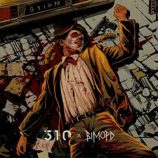

Nama: Muhammad Rifky Kurniawan
Tanggal Lahir: 29 November 2004
NIM: H071231023
Jurusan: Sistem Informasi
Departemen: Matematika
Fakultas: Matematika dan Ilmu Pengetahuan Alam
Universitas: Universitas Hasanuddin
Kelas: Pemograman Web C
| Makanan Favorit | Gambar |
|---|---|
| KWETIAU | |
| INDOMIE | |
| NASI GORENG |

Judul Lagu : Dead Clown
Penyanyi : 510 ft.Bimopd